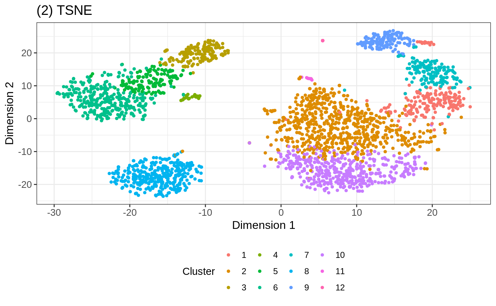

Interactive visualization of SummarizedExperiment objects with iSEE
Kevin Rue-Albrecht, Charlotte Soneson, Federico Marini, and Aaron Lun
June 19, 2019
Source:vignettes/iSEE-lab.Rmd
iSEE-lab.RmdInteractive visualization of SummarizedExperiment objects with iSEE
Instructor names and contact information
- Kevin Rue-Albrecht1 (kevin.rue-albrecht@kennedy.ox.ac.uk)
- Charlotte Soneson2 (charlotte.soneson@fmi.ch)
Workshop description
This workshop demonstrates how to use the iSEE package to create and configure interactive applications for the exploration of various types of genomics data sets (e.g., bulk and single-cell RNA-seq, CyTOF, gene expression microarray).
This workshop will be presented as a lab session that combines an instructor-led live demo, followed by hands-on experimentation guided by completely worked examples and stand-alone notes that participants may continue to use after the workshop.
The instructor-led live demo comprises three parts:
- Brief lecture on the package concept and functionality
- Overview of the graphical user interface
- Instructions to preconfigure iSEE apps
The hands-on lab comprises three parts:
- Inspection of single-cell RNA-seq data at various steps of a typical computational workflow, including quality control and dimensionality reduction
- Addition of custom panels to the user interface for advanced visualization.
- Additional questions from the participants, including individual use cases and suggestions for future developments
Participants are encouraged to ask questions at any time during the workshop.
Pre-requisites
- Basic knowledge of R (https://www.r-project.org/about.html) syntax and the use of data-frames
- Familiarity with the SummarizedExperiment and SingleCellExperiment classes
- Familiarity with the shiny CRAN package
- Familiarity with the TENxPBMCData package and vignette
Additional background reading about the programming environment, relevant packages, and example use cases:
- Shiny from RStudio (https://shiny.rstudio.com)
- SummarizedExperiment paper: (Huber et al. 2015) (Figure 2)
- iSEE paper: (Rue-Albrecht et al. 2018)
Workshop Participation
Students will participate by following along an R markdown (https://rmarkdown.rstudio.com/) document, and asking questions throughout the workshop. There is also scope for participants to apply iSEE to their own data sets, and fuel the discussion with more questions about specific use cases.
Workshop goals and objectives
Learning goals
- Recognize the benefits of integrative data containers such as SummarizedExperiment and SingleCellExperiment for downstream analyses and visualization
- Outline the unique features of iSEE built upon the RStudio Shiny framework (https://shiny.rstudio.com)
- Identify aspcts of biological data that may be combined into insightful graphical outputs
- Utilize interactive GUI components and layouts to efficiently extract information from biological data sets
- Describe how to construct interactive apps and custom panels
Learning objectives
- Memorize the key information available in SummarizedExperiment and SingleCellExperiment objects
- Set up a local environment for running iSEE apps
- Interact with components of the iSEE user interface to visually inspect and discuss various data sets
- Identify and locate configurable aspects of iSEE apps
- Practice interactive visualization over a single-cell RNA-sequencing workflow
- Design custom iSEE panels for advanced use cases
- Imagine use cases and future developments for interactive visualization as part of computational workflows
Preparation of example scRNAseq data
In this workshop, we use example data from the TENxPBMCData package. This package provides an R / Bioconductor resource for representing and manipulating different single-cell RNA-seq data sets profiling peripheral blood mononuclear cells (PBMC) generated by 10X Genomics (https://support.10xgenomics.com/single-cell-gene-expression/datasets).
The man page for the TENxPBMCData() function gives an idea of the datasets that are available from this package. It can be opened with the following command.
Here, we use the "pbmc3k" dataset, which contains gene expression profiles for 2,700 single peripheral blood mononuclear cells. The first time this dataset is loaded, this command downloads the dataset to a local cache, which takes some time, depending on the speed of your internet connection. Subsequent times, the same command loads the dataset directly from the local cache.
At this point we can inspect the dataset in the console.
sce
#> class: SingleCellExperiment
#> dim: 32738 2700
#> metadata(0):
#> assays(1): counts
#> rownames(32738): ENSG00000243485 ENSG00000237613 ...
#> ENSG00000215616 ENSG00000215611
#> rowData names(3): ENSEMBL_ID Symbol_TENx Symbol
#> colnames: NULL
#> colData names(11): Sample Barcode ... Individual Date_published
#> reducedDimNames(0):
#> spikeNames(0):The dataset is provided as an object of the SingleCellExperiment class. In particular, this summary view indicates that the following pieces of information are available:
- An assay matrix named
"counts" - Row names (i.e. genes) are Ensembl gene IDs
- Row metadata include for each gene the official gene symbol, and the gene symbol used by the 10x CellRanger quantification pipeline
- Column names (i.e., cells) are not initialized and left to
NULL - Column metadata include diverse information for each cell, including the cell barcode (
"Barcode") and the donor identifier ("Individual").
Note that a SingleCellExperiment object (or, more generally, any SummarizedExperiment object) like this one already contains sufficient information to launch an interactive application instance to visualize the available data and metadata, using the iSEE() function.
For the purpose of this workshop, we first apply some preprocessing to the SingleCellExperiment object, in order to populate it with more information that can be visualized with iSEE. The steps below roughly follow those outlined in the simpleSingleCell Bioconductor workflow.
We start by adding column names to the object, and use gene symbols instead of Ensembl IDs as row names. In the case where multiple Ensembl identifiers correspond to the same gene symbol, the scater::uniquifyFeatureNames function concatenates the Ensembl ID and the gene symbol in order to generate unique feature names.
library(scater)
colnames(sce) <- paste0("Cell", seq_len(ncol(sce)))
rownames(sce) <- scater::uniquifyFeatureNames(
ID = rowData(sce)$ENSEMBL_ID,
names = rowData(sce)$Symbol_TENx
)
head(rownames(sce))
#> [1] "MIR1302-10" "FAM138A" "OR4F5" "RP11-34P13.7"
#> [5] "RP11-34P13.8" "AL627309.1"Next, we use the scater package to calculate gene- and cell-level quality metrics. These metrics are added as columns to the rowData and colData slots of the SingleCellExperiment object, respectively.
MT <- rownames(sce)[grep("^MT-", rownames(sce))]
sce <- scater::calculateQCMetrics(object = sce,
feature_controls = list(MT = MT))
sce
#> class: SingleCellExperiment
#> dim: 32738 2700
#> metadata(0):
#> assays(1): counts
#> rownames(32738): MIR1302-10 FAM138A ... AC002321.2 AC002321.1
#> rowData names(11): ENSEMBL_ID Symbol_TENx ... total_counts
#> log10_total_counts
#> colnames(2700): Cell1 Cell2 ... Cell2699 Cell2700
#> colData names(47): Sample Barcode ...
#> pct_counts_in_top_200_features_MT
#> pct_counts_in_top_500_features_MT
#> reducedDimNames(0):
#> spikeNames(0):We filter out a few cells with a large fraction of the counts coming from mitochondrial genes, since these may be damaged cells. Notice the reduced number of columns in the dataset below.
(sce <- sce[, sce$pct_counts_MT < 5])
#> class: SingleCellExperiment
#> dim: 32738 2643
#> metadata(0):
#> assays(1): counts
#> rownames(32738): MIR1302-10 FAM138A ... AC002321.2 AC002321.1
#> rowData names(11): ENSEMBL_ID Symbol_TENx ... total_counts
#> log10_total_counts
#> colnames(2643): Cell1 Cell2 ... Cell2699 Cell2700
#> colData names(47): Sample Barcode ...
#> pct_counts_in_top_200_features_MT
#> pct_counts_in_top_500_features_MT
#> reducedDimNames(0):
#> spikeNames(0):Next, we calculate size factors and normalized and log-transformed expression values, using the scran and scater packages. Note that it is typically recommended to pre-cluster the cells before computing the size factors, as follows:
# set.seed(1000)
# clusters <- scran::quickCluster(sce, BSPARAM = IrlbaParam())
# sce <- scran::computeSumFactors(sce, cluster = clusters, min.mean = 0.1)However, for time reasons, we will skip the pre-clustering step in this workshop.
library(scran)
sce <- scran::computeSumFactors(sce, min.mean = 0.1)
summary(sizeFactors(sce))
#> Min. 1st Qu. Median Mean 3rd Qu. Max.
#> 0.1164 0.7309 0.9004 1.0000 1.1635 9.8580
sce <- scater::normalize(sce)In order to extract the most informative genes, we first model the mean-variance trend and decompose the variance into biological and technical components.
logcounts(sce) <- as.matrix(logcounts(sce))
new.trend <- scran::makeTechTrend(x = sce)
fit <- scran::trendVar(sce, use.spikes = FALSE, loess.args = list(span = 0.05))
fit$trend <- new.trend
dec <- scran::decomposeVar(fit = fit)
top.dec <- dec[order(dec$bio, decreasing = TRUE), ]
head(top.dec)
#> DataFrame with 6 rows and 6 columns
#> mean total bio
#> <numeric> <numeric> <numeric>
#> LYZ 1.63949764898989 3.92208536906663 3.27404036212034
#> S100A9 1.07322748956473 3.36899492417173 2.73849817385183
#> FTL 3.67845532888203 2.88498930976467 2.662250196795
#> HLA-DRA 1.56936865352987 3.16577098114059 2.51202239465566
#> CD74 2.23652914180461 2.75839122768224 2.21465618657833
#> FTH1 3.52182996359555 2.20828385314013 1.95849254164614
#> tech p.value FDR
#> <numeric> <numeric> <numeric>
#> LYZ 0.648045006946287 0 0
#> S100A9 0.630496750319901 0 0
#> FTL 0.22273911296967 0 0
#> HLA-DRA 0.653748586484937 0 0
#> CD74 0.543735041103904 0 0
#> FTH1 0.249791311493993 0 0Next, we apply Principal Components Analysis (PCA) and t-distributed Stochastic Neighbor Embedding (t-SNE) to generate low-dimensional representations of the cells in our data set. These low-dimensional representations are added to the reducedDim slot of the SingleCellExperiment object.
library(BiocSingular)
set.seed(1000)
sce <- scran::denoisePCA(sce, technical = new.trend, BSPARAM = IrlbaParam())
ncol(reducedDim(sce, "PCA"))
#> [1] 32
set.seed(1000)
sce <- scater::runTSNE(sce, use_dimred = "PCA", perplexity = 30)
sce
#> class: SingleCellExperiment
#> dim: 32738 2643
#> metadata(1): log.exprs.offset
#> assays(2): counts logcounts
#> rownames(32738): MIR1302-10 FAM138A ... AC002321.2 AC002321.1
#> rowData names(11): ENSEMBL_ID Symbol_TENx ... total_counts
#> log10_total_counts
#> colnames(2643): Cell1 Cell2 ... Cell2699 Cell2700
#> colData names(47): Sample Barcode ...
#> pct_counts_in_top_200_features_MT
#> pct_counts_in_top_500_features_MT
#> reducedDimNames(2): PCA TSNE
#> spikeNames(0):Finally, we cluster the cells using a graph-based algorithm, and find ‘marker genes’ for each cluster as the genes that are significantly upregulated in the cluster compared to each of the other inferred clusters. The adjusted p-values from this test, for each cluster, are added to the rowData slot of the object.
snn.gr <- scran::buildSNNGraph(sce, use.dimred = "PCA")
clusters <- igraph::cluster_walktrap(snn.gr)
sce$Cluster <- factor(clusters$membership)
table(sce$Cluster)
#>
#> 1 2 3 4 5 6 7 8 9 10 11 12
#> 197 692 161 31 150 331 162 339 137 422 10 11
markers <- scran::findMarkers(sce, clusters = sce$Cluster,
direction = "up", pval.type = "all")
for (i in names(markers)) {
rowData(sce)[, paste0("FDR_cluster", i)] <-
markers[[i]]$FDR[match(rownames(sce),
rownames(markers[[i]]))]
}
sce
#> class: SingleCellExperiment
#> dim: 32738 2643
#> metadata(1): log.exprs.offset
#> assays(2): counts logcounts
#> rownames(32738): MIR1302-10 FAM138A ... AC002321.2 AC002321.1
#> rowData names(23): ENSEMBL_ID Symbol_TENx ... FDR_cluster11
#> FDR_cluster12
#> colnames(2643): Cell1 Cell2 ... Cell2699 Cell2700
#> colData names(48): Sample Barcode ...
#> pct_counts_in_top_500_features_MT Cluster
#> reducedDimNames(2): PCA TSNE
#> spikeNames(0):This concludes the preparation of the data. We have now a SingleCellExperiment object that contains different types of abundance values, representations in reduced dimensions, as well as a range of row (feature) and column (cell) metadata.
We can launch an iSEE instance for exploring this data set using the iSEE() function:
The main argument to the iSEE() function is a SummarizedExperiment object, or an object of any class extending SummarizedExperiment (such as SingleCellExperiment, in this case). No other restrictions are made on the type of data stored in the object, and iSEE can be used for interactive visualization of many different types of data. It is also worth noting that for various types of data, Bioconductor packages provides functionality for directly importing quantifications generated by external software packages into a SummarizedExperiment object. For example, the DropletUtils package can read quantifications from the 10x Genomics CellRanger pipeline for single-cell RNA-seq data, and the tximeta package can be used to read data from transcript quantification pipelines into a SummarizedExperiment object.
Overview of the iSEE package
This section provides an overview of the graphical interface of iSEE applications. To follow along, make sure that you have launched an iSEE instance as described in the code block at the end of the previous section. Note that in the default configuration, the panels do not look exactly like the ones shown in the screenshots below. For example, data points are not immediately colored, and the default annotation variables displayed by each panel may differ. Later sections of this workshop demonstrate how to modify the content of the panels and how they are displayed.
Note that for simplicity, we typically refer to a SummarizedExperiment in this workshop; however, iSEE works seamlessly for objects of any class extending SummarizedExperiment as well (e.g., SingleCellExperiment, DESeqDataSet). That said, some types of panels – such as the Reduced dimension plot – are only available for objects that contain a reducedDim slot (in particular, SingleCellExperiment objects); the basic SummarizedExperiment class does not contain this slot. In this workshop, we refer to the rows of the SummarizedExperiment object as ‘features’ (these can be genes, transcripts, genomic regions, etc) and to the columns as ‘samples’ (which, in our example data set, are single cells).
The user interface
The iSEE user interface consists of a number of panels, each displaying the data provided in the SummarizedExperiment from a specific perspective. There are 8 standard panel types; 6 plot panels and 2 table panels, all showcased in the figure below. In the default configuration, one panel of each type is included when launching the iSEE user interface. However, users are free to rearrange, resize, remove or add panels freely, as described in a later section. We provide a brief overview of each panel type in the following subsections.
In addition to the 8 standard panel types, user can create custom panels (both plots and tables). The creation and configuration of custom panels is discussed later, in a dedicated section of this workshop.

Reduced dimension plot
The reduced dimension plot can display any reduced dimension representation that is present in the reducedDim slot of the SingleCellExperiment object.
Note that this slot is not defined for the base SummarizedExperiment class, in which case the user interface does not allow the inclusion of panels of this type.

Column data plot
The column data plot can display one or two of the provided column annotations (from the colData slot). Depending on the class of the selected annotations, the panel shows either a Hinton diagram (Hinton and Shallice 1991; Bremner, Gotts, and Denham 1994), a violin plot, or a scatter plot.

Row data plot
Analogous to the column data plot above, the row data plot displays one or two of the provided row annotations (from the rowData slot). Depending on the class of the selected annotations, the panel displays either a Hinton plot, a violin plot, or a scatter plot.

Heat map
The heat map panel displays, for any assay, the observed values for a subset of the features across the samples.

Feature assay plot
The feature assay plot displays the observed values for one feature across the samples. It is also possible to plot the observed values for two features, in a scatter plot.

Sample assay plot
Analogous to the feature assay plot above, the sample assay plot shows the observed values for all features, for one of the samples. It is also possible to plot the observed values for two samples, in a scatter plot.

Row statistics table
The row statistics table displays all information provided in the rowData slot of the SummarizedExperiment object, leveraging the interactivity provided by the DT package.

Column statistics table
Analogous to the row statistics table above, the column statistics table displays all information provided in the colData slot of the SummarizedExperiment object.

‘Data parameters’ collapsible box
Each plot panel type has a Data parameters collapsible box. This box has different content for the each panel types, but in all cases it lets the user control the data that is displayed in the plot.

‘Visual parameters’ collapsible box
In contrast to the Data parameters collapsible box that lets users control what is displayed in the plot, the Visual parameters box lets users control how the information is displayed.
This collapsible box contains the controls to change the size, shape, opacity, and color of the points, to facet the plot by any available categorical annotation, to subsample points for increased speed of plot rendering, and to control how legends are displayed.

‘Selection parameters’ collapsible box
The Selection parameters collapsible box provides controls to transfer selections of points (features or samples) between panels.
We discuss point transmission in more detail later in this workshop.

Additional controls
At the top-right corner of the iSEE application, users can find additional controls for reproducibility, configuration, and help. Each of these is discussed in more detail later in this workshop. Links are provided in the last column of the table below.
| Panel organization |

|
Organize panels |
| Diagnostics |

|
Examine panel chart, Extract R code, Display panel settings |
| Documentation |

|
Quick tour, Open the vignette |
| Additional info |

|
About this session, About iSEE |
Configuration of the app interface
As mentioned above, the default behaviour of the iSEE() function is to launch an instance of the user interface that displays one panel of each of the standard types (provided the underlying data is available, e.g. for reduced dimension plots the reducedDim slot is required). However, in some cases it is desirable to have multiple panels of the same type, and/or exclude some panel types.
In order to accommodate such situations, users can add, remove, change the order of and resize all panels via the Panel organization menu in the top-right corner.
Action: Using your open iSEE instance, open the
Organizationmenu () and click on theOrganize panels() button. Try to add and remove panels, and resize the existing ones. Remember to click onApply settings() to apply the changes you have made to the interface.
Clicking in the selectize box listing all current panels will present you with a drop-down menu from which you can choose additional panels to add. Similarly, panels can be removed by clicking on the icon associated with the panel name.
Each panel can be individually resized by changing the width and height. Note that the total width of a row in the interface is 12 units. When the width of a panel is greater than the space available, the panel is moved to a new row.
It can take a great amount of time to achieve a satisfactory panel configuration. To avoid the need to manually organize the panels each time the app is opened, iSEE offers the possibility to export the current panel settings.
Action: click on the wrench icon () in the top-right corner, and select ‘Display panel settings’. Scroll to the end of the code in the popup window and copy the definition of the
initialPanelsvariable.
For example:
initialPanels <- DataFrame(
Name=c("Reduced dimension plot 1", "Column data plot 1",
"Row data plot 1", "Heat map 1",
"Feature assay plot 1", "Sample assay plot 1",
"Row statistics table 1", "Column statistics table 1"
),
Width=c(3L, 3L, 3L, 3L, 3L, 3L, 3L, 3L),
Height=c(460L, 460L, 460L, 460L, 460L, 460L, 460L, 460L)
)Action: Close the application, run the code that you just copied in your R session, and relaunch the application, now with the additional argument
initialPanelsset:
Notice how the panel configuration at startup is now identical to the one you saw just before displaying the panel settings.
Now that we have an application consisting of a suitable collection of panels for our data set, we’ll explore the collapsible boxes below each plot, which lets us control their appearance.
Displaying a different reduced dimension representation
By default, each Reduced dimension plot displays the first reduced dimension representation provided (contained in the reducedDim slot of the SingleCellExperiment object). If additional reduced dimension representations are included, the one chosen for the display can be changed in the Data parameters collapsible box in the Reduced dimension plot panel.
Action: Use this control to show the t-SNE representation instead of the PCA.
Notably, the instance can be preconfigured to immediately display the t-SNE representation when the application is launched.
Action: Close the application and run the following block of code to show two Reduced dimension plot panels; one showing the PCA representation, one showing the t-SNE representation.
redDimArgs <- redDimPlotDefaults(sce, 2)
redDimArgs[1, "Type"] <- "PCA"
redDimArgs[2, "Type"] <- "TSNE"
initialPanels <- DataFrame(
Name=c("Reduced dimension plot 1", "Reduced dimension plot 2"),
Width=c(4L, 4L),
Height=c(400, 400)
)
if (interactive()) {
iSEE(sce, redDimArgs = redDimArgs, initialPanels = initialPanels)
}
Coloring points by row/column annotation
With default settings, all points are colored black. However, any provided row (for features) or column (for samples) annotation can be used to color the points.
Action: To demonstrate this, open the
Visual parameterscollapsible box in one of the Reduced dimension plot panels, and setColor by:toColumn data. Scroll through the dropdown menu that appears to see all the sample annotations that can be used to color the points. All these values are taken from thecolDataslot of the provided object.
Action: First, color the cells by
Cluster, which contains the cluster labels that were assigned to the cells in the preprocessing step in a previous section. Note how a discrete color scheme is selected, since the variable is categorical.
Action: Next, color the cells by the log10-transformed number of detected genes (
log10_total_features_by_counts). Notice how the color scale is now continuous.
The instance can be preconfigured to control the coloring of data points, to display the same result on startup.
Action: Close the application and run the following block of code to continue editing the configuration of the two Reduced dimension plot panels prepared in the previous section.
redDimArgs[["ColorBy"]] <- "Column data"
redDimArgs[1, "ColorByColData"] <- "log10_total_features_by_counts"
redDimArgs[2, "ColorByColData"] <- "Cluster"
initialPanels <- DataFrame(
Name=c("Reduced dimension plot 1", "Reduced dimension plot 2"),
Width=c(4L, 4L),
Height=c(400, 400)
)
if (interactive()) {
iSEE(sce, redDimArgs = redDimArgs, initialPanels = initialPanels)
}
iSEE allows precise control over the color schemes used. More information about this can be found in the ExperimentColorMap vignette.
Coloring points by feature value
In addition to coloring cells by the provided annotations as above, we can also color them by the observed values for a given feature (as provided in one of the assays).
Action: Set
Color by:toFeature namein one of the Reduced dimension plot panels, and select one of the genes from the dropdown menu. You can search for a gene of interest by typing in the dropdown box. You can also choose which assay should be used to extract the values to color according to.
Again, the same result can be achieved by preconfiguring the application as follows.
Action: Close the application and run the following block of code to set up 3 panels, all displaying the t-SNE representation. In the first panel, we color cells by their
Clusterlabel. In the second and third panel, we display CD79A and CD74, a combination of gene markers typically observed in B cells.
## The displayed features IDs must be row names of the object
c("CD79A", "CD74") %in% rownames(sce)
#> [1] TRUE TRUE
redDimArgs <- redDimPlotDefaults(sce, 3)
redDimArgs[["Type"]] <- "TSNE"
redDimArgs[1, "ColorBy"] <- "Column data"
redDimArgs[1, "ColorByColData"] <- "Cluster"
redDimArgs[2:3, "ColorBy"] <- "Feature name"
redDimArgs[2, "ColorByFeatName"] <- "CD79A"
redDimArgs[3, "ColorByFeatName"] <- "CD74"
initialPanels <- DataFrame(
Name=paste("Reduced dimension plot", 1:3),
Width=rep(4L, 3L),
Height=rep(400, 3L)
)
if (interactive()) {
iSEE(sce, redDimArgs = redDimArgs, initialPanels = initialPanels)
}
Highlighting a single point
The Color by: Sample name option in the Reduced dimension plot can also be used to highlight a single sample.
Action: Set
Color by:toSample namein the Reduced dimension plot, and use the dropdown menu underneath to change the highlighted cell.
Again, the same result can be achieved by preconfiguring the application as follows. Note that it is more robust to provide the numerical index of the sample in the sce object (see the match statements in the code chunk below).
Action: Close the app and run the following block of code to continue editing the configuration of the two Reduced dimension plot panels prepared in the previous section. We also open the Visual parameters collapsible box to highlight the preconfigured options.
redDimArgs[2:3, "ColorBy"] <- "Sample name"
redDimArgs[2, "ColorBySampName"] <- match("Cell2439", colnames(sce))
redDimArgs[3, "ColorBySampName"] <- match("Cell673", colnames(sce))
redDimArgs[["VisualBoxOpen"]] <- TRUE
initialPanels <- DataFrame(
Name=paste("Reduced dimension plot", 1:3),
Width=rep(4L, 3L),
Height=rep(400, 3L)
)
if (interactive()) {
iSEE(sce, redDimArgs = redDimArgs, initialPanels = initialPanels)
}
Changing the size, shape and opacity of points
By default, only the Color options are displayed in the Visual parameters box. Additional controls can be shown by clicking the check boxes for Shape, Points, Facets and Other. The Shape and Points panels let you set the shape and size of points according to provided annotations (or to resize all points), and to set the point opacity. Here, you can also downsample points to increase the speed of rendering, which can be useful for data sets with large numbers of points.
Action: Close the app and run the following block of code to continue editing the configuration of the two Reduced dimension plot panels prepared in the previous section. Here, we reduce the point size and increase the transparency (i.e. reduce the value for the alpha attribute). We also apply a downsampling grid of 100 horizontal and vertical bins to the plot, where only a single data point is plotted (if any) for each bin. Finally, we display the
ShapeandPointsoptions.
redDimArgs[2:3, "PointSize"] <- 0.4
redDimArgs[2:3, "PointAlpha"] <- 0.4
redDimArgs[["VisualBoxOpen"]] <- TRUE
redDimArgs[["Downsample"]] <- TRUE
redDimArgs[["SampleRes"]] <- 200
redDimArgs[["VisualChoices"]][[2]] <- list("Shape", "Points")
redDimArgs[["VisualChoices"]][[3]] <- list("Shape", "Points")
initialPanels <- DataFrame(
Name=paste("Reduced dimension plot", 1:3),
Width=rep(4L, 3L),
Height=rep(400, 3L)
)
if (interactive()) {
iSEE(sce, redDimArgs = redDimArgs, initialPanels = initialPanels)
}
Changing the displayed metadata
The Column data plot and Row data plot panels are used to display the information in the colData and rowData slots of the SummarizedExperiment object. These panels can display either one or two annotations. By default, the first annotation in the respective metadata table is selected.
The plot layout adapts automatically to the type of annotation(s) displayed.
- When all chosen annotations are categorical, iSEE displays a Hinton plot, consisting of rectangles with an area proportional to the number of observations they represent.
- For a single continuous variable, or one continuous and one categorical variable, iSEE uses violin plot(s).
- If two continuous variables are chosen, iSEE displays a scatter plot.
As a side note, categorical variables with “too many” unique values (which is typically the case for sample IDs, for instance) are represented as numeric variables, by replacing each value by an index. The limit for what is considered “too many” unique values can be set using options(iSEE.maxlevels = 30).
Action: Explore the different types of plots provided in the Column data or Row data plot panels by selecting different annotations as the
Column of interest (Y-axis)and/or settingX-axis:toColumn dataand selecting an additional annotation.
In the following code chunk we demonstrate the preconfiguration of an app instance that immediately displays two panels.
Action: Close the app and run the following block of code to set up one Column data plot and one Row data plot panel. We set up the Column data plot panel to immediately examine the proportion of counts assigned to mitochondrial features in each cluster. We set up the Row data plot panel to examine the proportion of cells with detectable expression against the log-transformed total counts for each gene.
colDataArgs <- colDataPlotDefaults(sce, 1)
colDataArgs[1, "YAxis"] <- "pct_counts_MT"
colDataArgs$XAxis <- "Column data"
colDataArgs[1, "XAxisColData"] <- "Cluster"
rowDataArgs <- rowDataPlotDefaults(sce, 1)
rowDataArgs[1, "YAxis"] <- "n_cells_by_counts"
rowDataArgs$XAxis <- "Row data"
rowDataArgs[1, "XAxisRowData"] <- "log10_total_counts"
initialPanels <- DataFrame(
Name=c("Column data plot 1", "Row data plot 1"),
Width=rep(4L, 2L),
Height=rep(400, 2L)
)
if (interactive()) {
iSEE(sce, colDataArgs = colDataArgs, rowDataArgs = rowDataArgs, initialPanels = initialPanels)
}
Displaying gene expression
The Feature assay plot is used to display the observed values for one feature across the samples on the Y-axis. By default, the first feature in the rownames of the dataset is selected, displaying its distribution across the entire dataset.
While continuous measurements are more common (e.g., gene expression), discrete assays are also supported (e.g., single nucleotide polymorphisms), and displayed as a Hinton plot, consisting of rectangles with an area proportional to the number of samples they represent.
It is also possible to plot the observed values a second feature on the X-axis. This will result in a scatter plot or Hinton plot, depending on the continuous or discrete nature of the data, respectively.
Alternatively, the X-axis can also be used to stratify gene expression according to a discrete sample metadata in the form of a violin plot, while a continuous metadata will generate a scatter plot.
Action: Explore the different types of plots generated by the Feature assay plot panel using the choices available for the two axes.
Similarly to all other panels, Feature assay plot can be preconfigured to immediately display specific information when the app is launched.
Action: Close the app and run the following block of code to set up three Feature assay plot panels demonstrating different configurations. All three panels display the same gene on the Y-axis and color data points according to their cluster label. On the X-axis, the first panel displays a discrete sample metadata variable, the cluster label; the second panel display a continuous sample metadata variable, the log-transformed library size; the third panel displays the expression of a second gene.
featAssayArgs <- featAssayPlotDefaults(sce, 3)
featAssayArgs[["ColorBy"]] <- "Column data"
featAssayArgs[["ColorByColData"]] <- "Cluster"
featAssayArgs[["YAxisFeatName"]] <- match("CD3D", rownames(sce))
featAssayArgs[1, "XAxis"] <- "Column data"
featAssayArgs[1, "XAxisColData"] <- "Cluster"
featAssayArgs[2, "XAxis"] <- "Column data"
featAssayArgs[2, "XAxisColData"] <- "log10_total_counts"
featAssayArgs[3, "XAxis"] <- "Feature name"
featAssayArgs[3, "XAxisFeatName"] <- match("CD40LG", rownames(sce))
featAssayArgs[["DataBoxOpen"]] <- TRUE
initialPanels <- DataFrame(
Name=paste("Feature assay plot", 1:3),
Width=rep(4L, 3L),
Height=rep(400, 3L)
)
if (interactive()) {
iSEE(sce, featAssayArgs = featAssayArgs, initialPanels = initialPanels)
}
Linking panels and transmitting point selections
When exploring data, it is often useful to be able to select a subset of points and investigate different aspects of their characteristic features. In iSEE, this can be achieved by selecting points in one panel, and transmitting this selection to one or more other panels.
Action: Select a set of points in one of the Feature assay plot panels, by drawing a rectangle around them. Then open the Selection parameters collapsible box of one of the other Feature assay plot panels, and select the Feature assay plot panel where you made the point selection from the dropdown menu under Receive column selection from. Note how the points corresponding to the cells that you selected in the first panel are highlighted in the receiving panel. You can highlight the points in different ways by changing the Selection effect.
Also the brushing and point selection can be preconfigured. In the example below, we configure three types of panels: a Feature assay plot, a Reduced dimension plot, and a Column data plot. For visual convenience, we color data points in all three panels by the cluster label.
To demonstrate the feature, we define a Shiny brush in the Feature assay plot panel to select cells with detectable levels of the CD3D gene. For the other two panels, pay particular attention to the "SelectByPlot" instruction which declares that they should both receive the data points selected in the Feature assay plot panel. In addition, we specify that the Reduced dimension plot should highlight the selection by applying a transparency effect to unselected data points. Alternatively, we use the Column data plot to demonstrate how the selection can also be highlighted by applying a given color (here, red) to the selected data points.
Action: Close the app and run the following block of code to launch the example application described above.
featAssayArgs <- featAssayPlotDefaults(sce, 2)
featAssayArgs[1, "YAxisFeatName"] <- match("CD3D", rownames(sce))
featAssayArgs$BrushData[[1]] <- list(
xmin = 0.5, xmax = 12.5, ymin = 0.5, ymax = 5.7,
mapping = list(x = "X", y = "Y", group = "GroupBy"),
direction = "xy",
brushId = "featAssayPlot1_Brush", outputId = "featAssayPlot1")
featAssayArgs[1, "XAxis"] <- "Column data"
featAssayArgs[1, "XAxisColData"] <- "Cluster"
featAssayArgs[1, "ColorBy"] <- "Column data"
featAssayArgs[1, "ColorByColData"] <- "Cluster"
redDimArgs <- redDimPlotDefaults(sce, 2)
redDimArgs[1, "SelectByPlot"] <- "Feature assay plot 1"
redDimArgs[1, "Type"] <- match("TSNE", reducedDimNames(sce))
redDimArgs[1, "ColorBy"] <- "Column data"
redDimArgs[1, "ColorByColData"] <- "Cluster"
redDimArgs[1, "SelectBoxOpen"] <- TRUE
colDataArgs <- colDataPlotDefaults(sce, 2)
colDataArgs[1, "SelectByPlot"] <- "Feature assay plot 1"
colDataArgs[1, "SelectEffect"] <- "Color"
colDataArgs[1, "YAxis"] <- "log10_total_counts"
colDataArgs[1, "XAxis"] <- "Column data"
colDataArgs[1, "XAxisColData"] <- "pct_counts_MT"
colDataArgs[1, "ColorBy"] <- "Column data"
colDataArgs[1, "ColorByColData"] <- "Cluster"
colDataArgs[1, "SelectBoxOpen"] <- TRUE
initialPanels <- DataFrame(
Name=c(
"Feature assay plot 1", "Reduced dimension plot 1", "Column data plot 1",
"Feature assay plot 2", "Reduced dimension plot 2", "Column data plot 2"),
Width=rep(4L, 3L),
Height=rep(400, 3L)
)
if (interactive()) {
iSEE(
sce,
redDimArgs = redDimArgs, colDataArgs = colDataArgs, featAssayArgs = featAssayArgs,
initialPanels = initialPanels
)
}
Notably, iSEE can display active links transmitting point selections between panel using the “Examine panel chart” menu. Visible panels that do not send or receive a selection are also shown.

Zooming into a plot subregion
iSEE allows you to zoom into a subregion of a plot, by simply drawing a rectangle around the area of interest and double-clicking inside the rectangle. To zoom back out to the full plot, double-click anywhere in the plot.
To demonstrate the feature, we set up two Reduced dimension plot panels. In the first panel, we draw a Shiny brush to indicate an area of interest in the reduced dimension plot. We preconfigure the second panel to display only that area. In both panels, we color data points by cluster label using the same color map, to help visualize the zoom relationship between the two panels.
Action: Close the app and run the following block of code to launch the example application described above.
redDimArgs <- redDimPlotDefaults(sce, 2)
redDimArgs[["Type"]] <- "TSNE"
redDimArgs[["ColorBy"]] <- "Column data"
redDimArgs[["ColorByColData"]] <- "Cluster"
redDimArgs[1, "PointSize"] <- 1
redDimArgs[2, "PointSize"] <- 2
redDimArgs[["BrushData"]][[1]] <- list(
xmin = 3.4, xmax = 27.3, ymin = 0.8, ymax = 30.0,
log = list(x = NULL, y = NULL), mapping = list(x = "X", y = "Y", colour = "ColorBy"),
direction = "xy", brushId = "redDimPlot1_Brush", outputId = "redDimPlot1")
redDimArgs[["ZoomData"]] [[2]] <- c(xmin = 3.4, xmax = 27.3, ymin = 0.8, ymax = 30.0)
initialPanels <- DataFrame(
Name=c("Reduced dimension plot 1", "Reduced dimension plot 2"),
Width=rep(6L, 2L),
Height=rep(400, 2L)
)
if (interactive()) {
iSEE(sce, redDimArgs = redDimArgs, initialPanels = initialPanels)
}
Filtering tables
Tables may also be preconfigured to immediately display a subset of rows according to their filters or select a row different from the first one when the app is launched.
For simplicity, we demonstrate this feature using a subset of 3 column metadata–namely “Cluster”, “total_counts”, and “pct_counts_MT”–out of the set of 48 column metadata computed by the workflow above.
In the example below, we preconfigure a Column statistics table to display only cells with cluster labels “3” and “5”, and a library size between 5,000 and 15,844 (the maximum library size in the dataset). In addition, we also preselect the cell named “Cell684”.
Action: Close the app and run the following block of code to launch the example application described above.
sce1 <- sce
colData(sce1) <- colData(sce1)[, c("Cluster", "total_counts", "pct_counts_MT")]
colStatArgs <- colStatTableDefaults(sce1, 1)
colStatArgs[["SearchColumns"]][[1]] <- c("[\"3\", \"5\"]", "5000 ... 15844", "")
colStatArgs[["Selected"]] <- match("Cell684", colnames(sce1))
initialPanels <- DataFrame(
Name=c("Column statistics table 1"),
Width=c(12L),
Height=c(600)
)
if (interactive()) {
iSEE(sce1, colStatArgs = colStatArgs, initialPanels = initialPanels)
}
Notably the preselected cell can be used to immediately establish a relationship with another panel and highlighted the selection in a different panel as demonstrated earlier.
Action: Close the app and run the following block of code to launch an application that includes a Reduced dimension plot panel dynamically higlighting the cell selected in the Column statistics table. Select different rows of the cell to see the Reduced dimension plot panel update accordingly.
redDimArgs <- redDimPlotDefaults(sce1, 1)
redDimArgs[["Type"]] <- "TSNE"
redDimArgs$VisualBoxOpen <- TRUE
redDimArgs$ColorBy <- "Sample name"
redDimArgs$ColorByColTable <- "Column statistics table 1"
initialPanels <- DataFrame(
Name=c("Column statistics table 1", "Reduced dimension plot 1"),
Width=c(6L, 6L),
Height=c(600, 400)
)
if (interactive()) {
iSEE(sce1, redDimArgs = redDimArgs, colStatArgs = colStatArgs,
initialPanels = initialPanels)
}
Saving and restoring the state of the application
In the previous sections we have seen how we can specify the initial state of each panel by modifying the columns of the corresponding *Args argument. Often, the initial exploration of a data set, including reorganization and configuration of panels is done interactively. Once a satisfactory panel setup has been achieved, the corresponding settings can be exported and used to restore the state of the app at startup.
Action: Click on the wrench icon () in the top-right corner, and select ‘Display panel settings’. Copy all the code shown in the pop-up window. Close the app and paste this code in your R session. Then launch a new instance using the following code. Note how the app starts in the same configuration as it was before closing. Of course, it is still possible to continue exploring the data interactively - we have only changed the starting configuration.
if (interactive()) {
iSEE(sce, redDimArgs = redDimPlotArgs, colDataArgs = colDataPlotArgs,
featAssayArgs = featAssayPlotArgs, rowStatArgs = rowStatTableArgs,
rowDataArgs = rowDataPlotArgs, sampAssayArgs = sampAssayPlotArgs,
colStatArgs = colStatTableArgs, customDataArgs = customDataPlotArgs,
customStatArgs = customStatTableArgs, heatMapArgs = heatMapPlotArgs,
initialPanels = initialPanels)
}Custom panels
In addition to the standard panel types, iSEE allows the user to create custom panels, displaying any type of plot or table. The custom panels can receive row and column selections from the standard panels. In order to create a custom panel, we need to define a function that generates the desired output. This function must receive a SummarizedExperiment object as it first input. In addition, if only one selection is to be transmitted (i.e., if iSEE(..., customSendAll=FALSE)) it should take a vector of row names as the second argument, and a vector of column names as the third argument. If iSEE(..., customSendAll=TRUE), all selections (active and saved) are transmitted.
Example: Custom PCA plot
We will first show how to create a custom panel that performs dimension reduction (here, PCA) on a subset of the rows and columns, selected in and transmitted from other panels in the interface.
Action: Copy the code below in your R session in order to define the custom function.
library(scater)
CUSTOM_PCA <- function(se, rows, columns,
colour_by = NULL, scale_features = TRUE
) {
if (!is.null(columns)) {
kept <- se[, columns]
} else {
return(
ggplot() + theme_void() + geom_text(
aes(x, y, label = label),
data.frame(x = 0, y = 0, label = "No column data selected."),
size = 5)
)
}
scale_features <- as.logical(scale_features)
kept <- runPCA(kept, feature_set = rows, scale_features = scale_features)
plotPCA(kept, colour_by = colour_by)
}Action: Next, launch an iSEE session with the custom PCA plot panel, as well as a Reduced dimension plot and a Row data plot, from which the column and row selections for the custom PCA are obtained. Select subsets of the points in each of these two panels and note how the PCA plot in the custom panel is updated. Then, in the Data parameters box in the custom panel, use the ‘Custom arguments’ field to select another annotation (or a feature name) to color the points by. Note how iSEE detects that the input arguments were changed, and prompts you to update the plot.
customDataArgs <- customDataPlotDefaults(sce, 1)
customDataArgs$Function <- "CUSTOM_PCA"
customDataArgs$Arguments <- "colour_by Cluster\nscale_features FALSE"
customDataArgs$ColumnSource <- "Reduced dimension plot 1"
customDataArgs$RowSource <- "Row data plot 1"
customDataArgs$DataBoxOpen <- TRUE
rowDataArgs <- rowDataPlotDefaults(sce, 1)
rowDataArgs$YAxis <- "pct_dropout_by_counts"
rowDataArgs$XAxis <- "Row data"
rowDataArgs$XAxisRowData <- "log10_mean_counts"
redDimArgs <- redDimPlotDefaults(sce, 1)
redDimArgs$Type <- "TSNE"
redDimArgs$ColorBy <- "Column data"
redDimArgs$ColorByColData <- "Cluster"
initialPanels <- DataFrame(
Name = c("Reduced dimension plot 1", "Row data plot 1", "Custom data plot 1"),
Width = c(4L, 4L, 4L)
)
if (interactive()) {
iSEE(
sce,
customDataArgs = customDataArgs,
rowDataArgs = rowDataArgs, redDimArgs = redDimArgs,
initialPanels = initialPanels,
customDataFun = list(CUSTOM_PCA = CUSTOM_PCA)
)
}
Example: Multiple selections and differential expression
In the example below, we demonstrate the use of iSEE(..., customSendAll=TRUE) to transmit all selections (active and saved). This information is used to compute the log-fold change between the active selection and each of the other saved selections.
Action: Copy the code below in your R session in order to define the custom function.
CUSTOM_DIFFEXP <- function(se, ri, ci, assay="logcounts") {
ri <- ri$active
if (is.null(ri)) { # ignoring saved gene selections for now.
ri <- rownames(se)
}
if (is.null(ci$active) || length(ci$saved)==0L) {
return(data.frame(row.names=character(0), LogFC=integer(0))) # dummy value.
}
assayMatrix <- assay(se, assay)[ri, , drop=FALSE]
active <- rowMeans(assayMatrix[,ci$active,drop=FALSE])
lfcs <- vector("list", length(ci$saved))
for (i in seq_along(lfcs)) {
saved <- rowMeans(assayMatrix[,ci$saved[[i]],drop=FALSE])
lfcs[[i]] <- active - saved
}
names(lfcs) <- sprintf("LogFC/%i", seq_along(lfcs))
output <- do.call(data.frame, lfcs)
rownames(output) <- ri
output
}Action: Next, launch an iSEE session with the custom table panel, as well as a Reduced dimension plot and a Row data plot, from which the column and row selections for the custom table are obtained. Select multiple subsets of the points in the reduced dimension plot (e.g., clusters) and note how the DE table in the custom panel is updated.
customStatArgs <- customStatTableDefaults(sce, 1)
customStatArgs$Function <- "CUSTOM_DIFFEXP"
customStatArgs$Arguments <- ""
customStatArgs$ColumnSource <- "Reduced dimension plot 1"
customStatArgs$RowSource <- "Row data plot 1"
customStatArgs$DataBoxOpen <- TRUE
rowDataArgs <- rowDataPlotDefaults(sce, 1)
rowDataArgs$YAxis <- "pct_dropout_by_counts"
rowDataArgs$XAxis <- "Row data"
rowDataArgs$XAxisRowData <- "log10_mean_counts"
redDimArgs <- redDimPlotDefaults(sce, 1)
redDimArgs$Type <- "TSNE"
redDimArgs$ColorBy <- "Column data"
redDimArgs$ColorByColData <- "Cluster"
redDimArgs$SelectBoxOpen <- TRUE
initialPanels <- DataFrame(
Name = c("Reduced dimension plot 1", "Row data plot 1", "Custom statistics table 1"),
Width = c(4L, 4L, 4L)
)
if (interactive()) {
iSEE(
sce,
customStatArgs = customStatArgs,
rowDataArgs = rowDataArgs, redDimArgs = redDimArgs,
initialPanels = initialPanels,
customStatFun = list(CUSTOM_DIFFEXP = CUSTOM_DIFFEXP),
customSendAll = TRUE
)
}
More examples of custom panels can be found at https://github.com/kevinrue/iSEE_custom and in the Custom panels vignette (https://bioconductor.org/packages/release/bioc/vignettes/iSEE/inst/doc/custom.html).
Reproducibility
The fact that data exploration is done interactively is no reason to forego reproducibility! To this end, iSEE lets you export the exact R code used to create each of the currently visible plots.
Action: Close the application and run the following block of code to set up 3 panels, all displaying the t-SNE representation.
redDimArgs <- redDimPlotDefaults(sce, 3)
redDimArgs[["Type"]] <- "TSNE"
redDimArgs[1, "ColorBy"] <- "Column data"
redDimArgs[1, "ColorByColData"] <- "Cluster"
redDimArgs[2:3, "ColorBy"] <- "Feature name"
redDimArgs[2, "ColorByFeatName"] <- "CD79A"
redDimArgs[3, "ColorByFeatName"] <- "CD74"
initialPanels <- DataFrame(
Name=paste("Reduced dimension plot", 1:3),
Width=rep(4L, 3L),
Height=rep(400, 3L)
)
if (interactive()) {
iSEE(sce, redDimArgs = redDimArgs, initialPanels = initialPanels)
}Then click on the wrench icon () in the top-right corner, and select ‘Extract the R code’. Copy the preamble and the code for the first Reduced dimension plot from the pop-up window. Close the app and paste the code in your R session. Note how this recreates the first reduced dimension plot from the app.
se <- sce
colData(se)[,"sizeFactors(se)"] <- sizeFactors(se)
colormap <- ExperimentColorMap()
colormap <- synchronizeAssays(colormap, se)
all_coordinates <- list()
custom_data_fun <- NULL
custom_stat_fun <- NULL
################################################################################
## Reduced dimension plot 1
################################################################################
red.dim <- reducedDim(se, 2);
plot.data <- data.frame(X = red.dim[, 1], Y = red.dim[, 2], row.names=colnames(se));
plot.data$ColorBy <- colData(se)[,"Cluster"];
plot.data <- subset(plot.data, !is.na(X) & !is.na(Y));
# Saving data for transmission
all_coordinates[['redDimPlot1']] <- plot.data
# Creating the plot
ggplot() +
geom_point(aes(x = X, y = Y, color = ColorBy), alpha = 1, plot.data, size=1) +
labs(x = "Dimension 1", y = "Dimension 2", color = "Cluster", title = "(2) TSNE") +
coord_cartesian(xlim = range(plot.data$X, na.rm = TRUE),
ylim = range(plot.data$Y, na.rm = TRUE), expand = TRUE) +
scale_color_manual(values=colDataColorMap(colormap, "Cluster", discrete=TRUE)(12), na.value='grey50', drop=FALSE) +
scale_fill_manual(values=colDataColorMap(colormap, "Cluster", discrete=TRUE)(12), na.value='grey50', drop=FALSE) +
theme_bw() +
theme(legend.position = 'bottom', legend.box = 'vertical', legend.text=element_text(size=9), legend.title=element_text(size=11),
axis.text=element_text(size=10), axis.title=element_text(size=12), title=element_text(size=12))
Additional resources
- Bioconductor landing page: https://bioconductor.org/packages/iSEE/
- Publication (F1000Research, 2018): https://f1000research.com/articles/7-741/v1
- Deployed examples: https://marionilab.cruk.cam.ac.uk/, code at https://github.com/ltla/iSEE2018
- Further deployments in the https://github.com/federicomarini/iSEE_instances repo
- iSEE in production: http://www.teichlab.org/singlecell-treg
- Custom panel examples: https://github.com/kevinrue/iSEE_custom
- Development version (bug reports etc): https://github.com/csoneson/iSEE
Session info
sessionInfo()
#> R version 3.6.0 (2017-01-27)
#> Platform: x86_64-pc-linux-gnu (64-bit)
#> Running under: Ubuntu 16.04.6 LTS
#>
#> Matrix products: default
#> BLAS: /home/travis/R-bin/lib/R/lib/libRblas.so
#> LAPACK: /home/travis/R-bin/lib/R/lib/libRlapack.so
#>
#> locale:
#> [1] LC_CTYPE=en_US.UTF-8 LC_NUMERIC=C
#> [3] LC_TIME=en_US.UTF-8 LC_COLLATE=en_US.UTF-8
#> [5] LC_MONETARY=en_US.UTF-8 LC_MESSAGES=en_US.UTF-8
#> [7] LC_PAPER=en_US.UTF-8 LC_NAME=C
#> [9] LC_ADDRESS=C LC_TELEPHONE=C
#> [11] LC_MEASUREMENT=en_US.UTF-8 LC_IDENTIFICATION=C
#>
#> attached base packages:
#> [1] parallel stats4 stats graphics grDevices utils datasets
#> [8] methods base
#>
#> other attached packages:
#> [1] iSEE_1.5.1 BiocSingular_1.1.3
#> [3] scran_1.13.7 scater_1.13.7
#> [5] ggplot2_3.2.0 TENxPBMCData_1.3.0
#> [7] HDF5Array_1.13.2 rhdf5_2.29.0
#> [9] SingleCellExperiment_1.7.0 SummarizedExperiment_1.15.4
#> [11] DelayedArray_0.11.2 BiocParallel_1.19.0
#> [13] matrixStats_0.54.0 Biobase_2.45.0
#> [15] GenomicRanges_1.37.12 GenomeInfoDb_1.21.1
#> [17] IRanges_2.19.10 S4Vectors_0.23.13
#> [19] BiocGenerics_0.31.4 BiocStyle_2.13.2
#>
#> loaded via a namespace (and not attached):
#> [1] Rtsne_0.15 ggbeeswarm_0.6.0
#> [3] colorspace_1.4-1 dynamicTreeCut_1.63-1
#> [5] rprojroot_1.3-2 XVector_0.25.0
#> [7] BiocNeighbors_1.3.2 fs_1.3.1
#> [9] roxygen2_6.1.1 DT_0.7
#> [11] bit64_0.9-7 interactiveDisplayBase_1.23.0
#> [13] AnnotationDbi_1.47.0 xml2_1.2.0
#> [15] splines_3.6.0 knitr_1.23
#> [17] jsonlite_1.6 dbplyr_1.4.2
#> [19] shinydashboard_0.7.1 shiny_1.3.2
#> [21] rentrez_1.2.2 BiocManager_1.30.4
#> [23] compiler_3.6.0 httr_1.4.0
#> [25] dqrng_0.2.1 backports_1.1.4
#> [27] assertthat_0.2.1 Matrix_1.2-17
#> [29] lazyeval_0.2.2 limma_3.41.5
#> [31] later_0.8.0 htmltools_0.3.6
#> [33] tools_3.6.0 rsvd_1.0.1
#> [35] igraph_1.2.4.1 gtable_0.3.0
#> [37] glue_1.3.1 GenomeInfoDbData_1.2.1
#> [39] reshape2_1.4.3 dplyr_0.8.1
#> [41] rappdirs_0.3.1 Rcpp_1.0.1
#> [43] pkgdown_1.3.0 nlme_3.1-139
#> [45] ExperimentHub_1.11.1 rintrojs_0.2.2
#> [47] DelayedMatrixStats_1.7.1 xfun_0.7
#> [49] stringr_1.4.0 beachmat_2.1.1
#> [51] mime_0.7 miniUI_0.1.1.1
#> [53] irlba_2.3.3 XML_3.98-1.20
#> [55] statmod_1.4.32 shinyAce_0.3.3
#> [57] AnnotationHub_2.17.3 edgeR_3.27.5
#> [59] zlibbioc_1.31.0 MASS_7.3-51.4
#> [61] scales_1.0.0 colourpicker_1.0
#> [63] promises_1.0.1 yaml_2.2.0
#> [65] curl_3.3 memoise_1.1.0
#> [67] gridExtra_2.3 stringi_1.4.3
#> [69] RSQLite_2.1.1 desc_1.2.0
#> [71] rlang_0.3.4 pkgconfig_2.0.2
#> [73] commonmark_1.7 bitops_1.0-6
#> [75] evaluate_0.14 lattice_0.20-38
#> [77] purrr_0.3.2 Rhdf5lib_1.7.2
#> [79] labeling_0.3 htmlwidgets_1.3
#> [81] cowplot_0.9.4 bit_1.1-14
#> [83] tidyselect_0.2.5 plyr_1.8.4
#> [85] magrittr_1.5 R6_2.4.0
#> [87] DBI_1.0.0 pillar_1.4.1
#> [89] withr_2.1.2 mgcv_1.8-28
#> [91] RCurl_1.95-4.12 tibble_2.1.3
#> [93] crayon_1.3.4 BiocFileCache_1.9.1
#> [95] rmarkdown_1.13 viridis_0.5.1
#> [97] locfit_1.5-9.1 grid_3.6.0
#> [99] blob_1.1.1 digest_0.6.19
#> [101] xtable_1.8-4 httpuv_1.5.1
#> [103] munsell_0.5.0 beeswarm_0.2.3
#> [105] viridisLite_0.3.0 vipor_0.4.5
#> [107] shinyjs_1.0References
Bremner, Frederick J, Stephen J Gotts, and Dina L Denham. 1994. “Hinton Diagrams: Viewing Connection Strengths in Neural Networks.” Behav. Res. Methods Instrum. Comput. 26 (2): 215–18.
Hinton, Geoffrey E, and Tim Shallice. 1991. “Lesioning an Attractor Network: Investigations of Acquired Dyslexia.” Psychological Review 98 (1): 74–95.
Huber, Wolfgang, Vincent J Carey, Robert Gentleman, Simon Anders, Marc Carlson, Benilton S Carvalho, Hector Corrada Bravo, et al. 2015. “Orchestrating High-Throughput Genomic Analysis with Bioconductor.” Nat. Methods 12 (2). Nature Publishing Group: 115–21.
Rue-Albrecht, Kevin, Federico Marini, Charlotte Soneson, and Aaron T L Lun. 2018. “iSEE: Interactive SummarizedExperiment Explorer.” F1000Res. 7 (June).